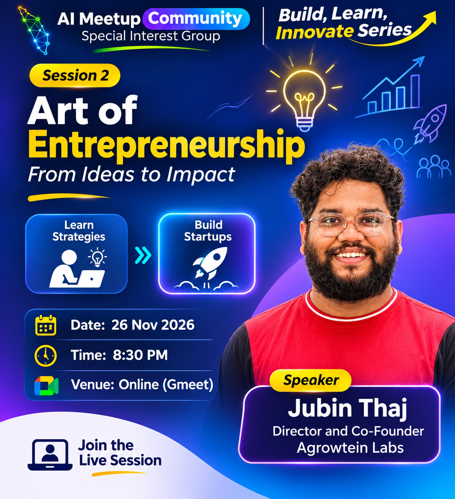
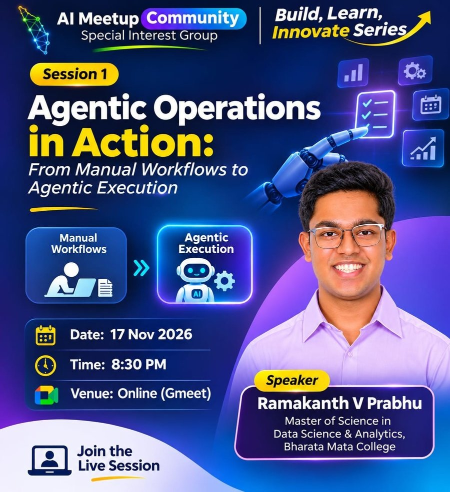

Clear directions for learning
Everyone needn't know everything about AI and data science. We map out where to start and what to learn next, for entry-level and senior roles alike.

Special Interest Group · Kerala, India · Online sessions
Towards an AI-native community. A Build, Learn, Innovate series for students, engineers, founders and leaders who want to put AI to work.
Kerala is rich in talent, yet many early-career engineers struggle to find a clear path, and experienced professionals are wondering how AI will change their roles. AI Meetup Community exists to close that gap by helping people realise their full potential in an AI-driven world.
We don't believe everyone needs to become a data scientist. We do believe everyone needs clear directions for learning, a habit of making things, and an R&D mindset.
Everyone needn't know everything about AI and data science. We map out where to start and what to learn next, for entry-level and senior roles alike.
Real learning happens by creating. We favour hackathons, demos and continuous experimentation over passive talks.
Innovation lives where what people desire, what is viable for business and what is technically feasible meet. We practise finding it.
"What we need is an entrepreneurial society in which innovation and entrepreneurship are normal, steady and continuous."Peter F. Drucker
The World Economic Forum's Future of Jobs Report 2025 places AI and big data among the top skills employers need. Whether you are an entry-level engineer or a seasoned architect, the answer is the same: keep learning, keep unlearning and keep relearning in the direction of AI.
Tue, 26 Nov 2026 · 8:30 PM IST · Online (Google Meet)
Session 2Startups and Entrepreneurship is a mindset as it brings together understanding of Business, Architecture and Translating These to User experiences and Revenues
Jubin is Director and Co-founder of Agrowtein Labs Pvt. Ltd., a tech startup dedicated to developing innovative solutions that drive efficiency and sustainability across agriculture and beyond. Throughout his journey, he has concentrated on building impactful solutions, fostering collaborations, and driving innovation to create meaningful change.
Connect on LinkedIn ↗
Tue, 17 Nov 2026 · 8:30 PM IST · Online (Google Meet)
Session 1How teams move from manual workflows to agentic execution: why AI agents matter for speed, scale and autonomy, the architecture behind them, an open-source approach to building them, and a live demo of an agentic system on a real use case.
M.Sc. Data Science & Analytics, Bharata Mata College. A background in mathematics, with hands-on work in AI/ML, electronics prototyping and self-hosted home labs. Active across Kochi's tech communities and helps steer community operations for the Build, Learn series.
Connect on LinkedIn ↗Two paths, one shared foundation. Both rest on a product mindset, an owner mindset, communication and collaboration.
Entry-level roles can become AI Engineer → AI-Augmented Engineer → Startup Founder; senior roles can become AI-Augmented → AI Model Expert → AI Disruptor.
AI Meetup is run by an AI-native support team, creating a ripple effect through Kerala's schools, startups and enterprises.
Getting the word out, widely.
Curating voices from industry and academia.
Making sure sessions are easy to attend.
Continuous improvement after every session.
We're always looking for speakers, mentors, hackathon jurors and volunteers. Contact us at organizers@aimeetup.tech Get in touch.